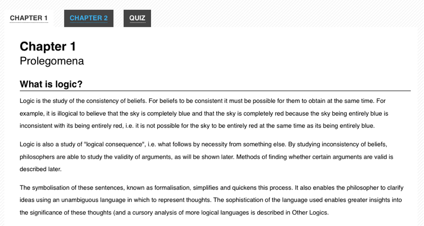

可访问的 Web 应用程序和小部件概述
web 正在变化。静态的、基于页面的站点逐渐被动态站点所取代，桌面式的 web 应用由大量的 JavaScript 和 AJAX 组成。设计人员完全可以通过 JavaScript，HTML 和 CSS 的组合创建令人惊叹的新的小部件和控件。这种转变有可能显着提高网络的响应能力和可用性，但是由于无障碍差距，存在许多用户有无法享用这种好处的风险。用户无法访问传统上 JavaScript 对于诸如屏幕阅读器等辅助技术，但是现在有了创建动态 Web 用户界面的方法，可以被各种用户访问。
问题
大多数 JavaScript 工具包提供了模拟类似桌面界面行为的客户端小部件库。滑块，菜单栏，文件列表视图等可以通过 JavaScript，CSS 和 HTML 的组合构建。由于 HTML 4 规范不提供语义上描述这些窗口小部件的内置标签，因此开发人员通常会使用通用元素（如<div>和<span>）。虽然这导致了一个看起来像桌面对应的小部件，但标记中通常没有足够的辅助技术可用的语义信息。网页上的动态内容对于无论何种原因无法查看屏幕的用户来说都是特别有问题的。股票行情，实时 twitter 消息更新，进度指示器和类似内容以辅助技术（AT）可能不知道的方式修改 DOM。那就是ARIA存在的意义。
Example 1: Markup for a tabs widget built without ARIA labeling. There's no information in the markup to describe the widget's form and function.
<!-- This is a tabs widget. How would you know, looking only at the markup? -->
<ol>
<li id="ch1Tab">
<a href="#ch1Panel">Chapter 1</a>
</li>
<li id="ch2Tab">
<a href="#ch2Panel">Chapter 2</a>
</li>
<li id="quizTab">
<a href="#quizPanel">Quiz</a>
</li>
</ol>
<div>
<div id="ch1Panel">Chapter 1 content goes here</div>
<div id="ch2Panel">Chapter 2 content goes here</div>
<div id="quizPanel">Quiz content goes here</div>
</div>
Example 2: How the tabs widget might be styled visually. Users might recognize it visually, but there are no machine-readable semantics for an assistive technology. 
ARIA
WAI-ARIA, 来自 W3C 的网络无障碍计划（Web Accessibility Initiative）的可访问的富互联网应用程序（Accessible Rich Internet Applications）规范，提供了一种添加辅助技术（如屏幕阅读器）所需的缺少语义的方法。ARIA 使开发人员可以通过向标记添加特殊属性来更详细地描述其小部件。旨在填补在动态 web 应用在发现的标准 HTML 标签与桌面式控件之的差距，ARIA 提供了角色和状态以描述大多数常见的 UI 小部件的行为。
The ARIA specification is split up into three different types of attributes: roles, states, and properties. Roles describe widgets that aren't otherwise available in HTML 4, such as sliders, menu bars, tabs, and dialogs. Properties describe characteristics of these widgets, such as if they are draggable, have a required element, or have a popup associated with them. States describe the current interaction state of an element, informing the assistive technology if it is busy, disabled, selected, or hidden.
ARIA attributes are designed to be interpreted automatically by the browser and translated to the operating system's native accessibility APIs. When ARIA is present, assistive technologies are able to recognize and interact with custom JavaScript controls in the same way that they do with desktop equivalents. This has the potential for providing a much more consistent user experience than was possible in the previous generation of web applications, since assistive technology users can apply all of their knowledge of how desktop applications work when they are using web-based applications.
Example 3: Markup for the tabs widget with ARIA attributes added.
<!-- Now *these* are Tabs! -->
<!-- We've added role attributes to describe the tab list and each tab. -->
<ol role="tablist">
<li id="ch1Tab" role="tab">
<a href="#ch1Panel">Chapter 1</a>
</li>
<li id="ch2Tab" role="tab">
<a href="#ch2Panel">Chapter 2</a>
</li>
<li id="quizTab" role="tab">
<a href="#quizPanel">Quiz</a>
</li>
</ol>
<div>
<!-- Notice the role and aria-labelledby attributes we've added to describe these panels. -->
<div id="ch1Panel" role="tabpanel" aria-labelledby="ch1Tab">Chapter 1 content goes here</div>
<div id="ch2Panel" role="tabpanel" aria-labelledby="ch2Tab">Chapter 2 content goes here</div>
<div id="quizPanel" role="tabpanel" aria-labelledby="quizTab">Quiz content goes here</div>
</div>
ARIA is supported in the latest versions of all major browsers, including Firefox, Safari, Opera, Chrome, and Internet Explorer. Many assistive technologies, such as the open source NVDA and Orca screen readers, also support ARIA. Increasingly, JavaScript widget libraries such as jQuery UI, YUI, Google Closure, and Dojo Dijit include ARIA markup as well.
可见性变化
Dynamic presentational changes include using CSS to change the appearance of content (such as a red border around invalid data, or changing the background color of a checked checkbox), as well as showing or hiding content.
状态变化
ARIA provides attributes for declaring the current state of a UI widget. Examples include (but are certainly not limited to):
aria-checked-
indicates the state of a checkbox or radio button
aria-disabled-
indicates that an element is visible, but not editable or otherwise operable
aria-grabbed-
indicates the 'grabbed' state of an object in a drag-and-drop operation
(For a full list of ARIA states, consult the ARIA list of states and properties.)
Developers should use ARIA states to indicate the state of UI widget elements and use CSS attribute selectors to alter the visual appearance based on the state changes (rather than using script to change a class name on the element).
The Open Ajax Alliance website provides an example of CSS attribute selectors based on ARIA states. The example shows a WYSIWYG editor interface with a dynamic menu system. Items currently selected in a menu, such as the font face, are visually distinguished from other items. The relevant parts of the example are explained below.
In this example, the HTML for a menu has the form shown in Example 1a. Note how, on lines 7 and 13, the aria-checked property is used to declare the selection state of the menu items.
Example 1a. HTML for a selectable menu.
<ul id="fontMenu" class="menu" role="menu" aria-hidden="true">
<li id="sans-serif"
class="menu-item"
role="menuitemradio"
tabindex="-1"
aria-controls="st1"
aria-checked="true">Sans-serif</li>
<li id="serif"
class="menu-item"
role="menuitemradio"
tabindex="-1"
aria-controls="st1"
aria-checked="false">Serif</li>
...
The CSS that is used to alter the visual appearance of the selected item is shown in Example 1b. Note that there is no custom classname used, only the status of the aria-checked attribute on line 1.
Example 1b. Attribute-based selector for indicating state.
li[aria-checked="true"] {
font-weight: bold;
background-image: url('images/dot.png');
background-repeat: no-repeat;
background-position: 5px 10px;
}
The JavaScript to update the aria-checked property has the form shown in Example 1c. Note that the script only updates the aria-checked attribute (lines 3 and 8); it does not need to also add or remove a custom classname.
Example 1c. JavaScript to update the aria-checked attribute.
var processMenuChoice = function(item) {
// 'check' the selected item
item.setAttribute('aria-checked', 'true');
// 'un-check' the other menu items
var sib = item.parentNode.firstChild;
for (; sib; sib = sib.nextSibling ) {
if ( sib.nodeType === 1 && sib !== item ) {
sib.setAttribute('aria-checked', 'false');
}
}
};
可见度变化
When content visibility is changed (i.e., an element is hidden or shown), developers should change the aria-hidden property value. The techniques described above should be used to declare CSS to visually hide an element using display:none.
The Open Ajax Alliance website provides an example of a tooltip that uses aria-hidden to control the visibility of the tooltip. The example shows a simple web form with tooltips containing instructions associated with the entry fields. The relevant parts of the example are explained below.
In this example, the HTML for the tooltip has the form shown in Example 2a. Line 9 sets the aria-hidden state to true.
Example 2a. HTML for a tooltip.
<div class="text">
<label id="tp1-label" for="first">First Name:</label>
<input type="text" id="first" name="first" size="20"
aria-labelledby="tp1-label"
aria-describedby="tp1"
aria-required="false" />
<div id="tp1" class="tooltip"
role="tooltip"
aria-hidden="true">Your first name is optional</div>
</div>
The CSS for this markup is shown in Example 2b. Note that there is no custom classname used, only the status of the aria-hidden attribute on line 1.
Example 2b. Attribute-based selector for indicating state.
div.tooltip[aria-hidden="true"] {
display: none;
}
The JavaScript to update the aria-hidden property has the form shown in Example 2c. Note that the script only updates the aria-hidden attribute (line 2); it does not need to also add or remove a custom classname.
Example 2c. JavaScript to update the aria-checked attribute.
var showTip = function(el) {
el.setAttribute('aria-hidden', 'false');
}
角色变化
ARIA allows developers to declare a semantic role for an element that otherwise offers incorrect or no semantics. For example, when an unordered list is used to create a menu, the <ul> should be given a role of menubar and each <li> should be given a role of menuitem.
The role of an element should not change. Instead, remove the original element and replace it with an element with the new role.
For example, consider an "inline edit" widget: a component that allows users to edit a piece of text in place, without switching contexts. This component has a "view" mode, in which the text is not editable, but is activatable, and an "edit" mode, in which the text can be edited. A developer might be tempted to implement the "view" mode using a read-only text <input> element and setting its ARIA role to button, then switching to "edit" mode by making the element writable and removing the role attribute in "edit" mode (since <input> elements have their own role semantics).
Do not do this. Instead, implement the "view" mode using a different element altogether, such as a <div> or <span> with a role of button, and the « edit » mode using a text <input> element.
异步内容变化
备注： See also Live Regions
键盘导航
Often times developers overlook support for the keyboard when they create custom widgets. To be accessible to a variety of users, all features of a web application or widget should also be controllable with the keyboard, without requiring a mouse. In practice, this usually involves following the conventions supported by similar widgets on the desktop, taking full advantage of the Tab, Enter, Spacebar, and arrow keys.
Traditionally, keyboard navigation on the web has been limited to the Tab key. A user presses Tab to focus each link, button, or form on the page in a linear order, using Shift-Tab to navigate backwards. It's a one-dimensional form of navigation—forward and back, one element at a time. On fairly dense pages, a keyboard-only user often has to press the Tab key dozens of times before accessing the needed section. Implementing desktop-style keyboard conventions on the web has the potential to significantly speed up navigation for many users.
Here's a summary of how keyboard navigation should work in an ARIA-enabled web application:
- The Tab key should provide focus to the widget as a whole. For example, tabbing to a menu bar should put focus on the menu's first elem.
- The arrow keys should allow for selection or navigation within the widget. For example, using the left and right arrow keys should move focus to the previous and next menu items.
- When the widget is not inside a form, both the Enter and Spacebar keys should select or activate the control.
- Within a form, the Spacebar key should select or activate the control, while the Enter key should submit the form's default action.
- If in doubt, mimic the standard desktop behavior of the control you are creating.
So, for the Tabs widget example above, the user should be able to navigate into and out of the widget's container (the <ol> in our markup) using the Tab and Shift-Tab keys. Once keyboard focus is inside the container, the arrow keys should allow the user to navigate between each tab (the <li> elements). From here, conventions vary from platform to platform. On Windows, the next tab should automatically be activated when the user presses the arrow keys. On Mac OS X, the user can press either Enter or the Spacebar to activate the next tab. An in-depth tutorial for creating Keyboard-navigable JavaScript widgets describes how to implement this behavior with JavaScript.
For more detail about desktop-style keyboard navigation conventions, a comprehensive DHTML style guide is available. It provides an overview of how keyboard navigation should work for each type of widget supported by ARIA. The W3C also offers a helpful ARIA Best Practices document that includes keyboard navigation and shortcut conventions for a variety of widgets.